Basketry connects craft, culture, and innovation. It teaches patience, material knowledge, design thinking, and sustainable practice.
Introduction to Basketry
Basketry is one of the oldest human crafts, shaped by the need to gather, carry, store, and protect things. The art of weaving plant fibers into containers has existed in every inhabited region of the world. This section introduces basketry as everyday technology that became a cultural art form. Basketry combines practical engineering with visual rhythm, producing objects that are both useful and beautiful. From simple grasses to complex woven patterns, the craft adapts to available materials and intended use. Basket makers have always balanced strength, flexibility, and economy of resources. The form of a basket follows its function, and the quality of construction determines how long it will serve its purpose. A successful basket is efficient, ergonomic, and visually expressive. Today, basketry is taught in design studios, craft schools, and community workshops. It is valued for its ecological footprint, low-tech sustainability, and deep connection to tradition. Many modern makers use traditional techniques with contemporary color palettes and new forms. Basketry also persists as a tangible record of cultural knowledge passed between generations. It remains relevant because it teaches students to think in systems, in three dimensions, and in the language of material behavior. Nearly every major art academy includes woven form or fiber work as part of its foundation studies.
Basketry blends practical form and cultural meaning into craft objects that endure across generations.
Ancient Origin
Basketry began in prehistoric times as communities moved from hunting to gathering and farming. Early humans needed lightweight, flexible containers for food, seeds, and water. The earliest baskets were likely made from grasses, reeds, rushes, and bark, using simple twining and coiling techniques. These forms were easy to repair and could be carried long distances during seasonal migrations. The first baskets supported the very first food economies: collecting wild berries, carrying shellfish, transporting grain, and storing harvested roots.
Archaeological evidence confirms that people were weaving baskets before they were firing pottery. Excavated woven impressions in clay from the Near East date to more than 10,000 years ago. In the Americas, ancient basket fragments recovered from dry caves in the western United States are also more than 10,000 years old. In parts of Africa and Asia, preserved plant fibers and reed containers show that basketry often developed in parallel to early textile and mat-making practices. Because plant materials usually decay, the survival of ancient basketry is rare; what remains are impressions, charred fragments, and indirect evidence in cave paintings, pottery patterns, and burial goods.
Early basketry followed a slow, adaptive path. People learned which plants were strongest, which hearts of palms could be split lengthwise, and which leaves became softer after soaking. This practical experimentation produced the first regional weaving traditions. The need for waterproof containers led to coiled baskets stitched with grass or root fibers. The need for open, airy trays produced plaited winnowing baskets and shallow fish traps. The need to carry heavy loads inspired thick-walled, stiff baskets with rigid frames. Each technical innovation came directly from the problem the maker needed to solve.
Because baskets are among the first household tools, they became part of early domestic architecture. In some ancient settlements, basketry was used to shape roof thatch, line hearths, or reinforce mud walls. Baskets also entered ritual life as vessels for offerings, containers for sacred seeds, and symbols of abundance. The oldest basketry therefore is not only a story of survival, but also a story of how people turned raw nature into shaped meaning.
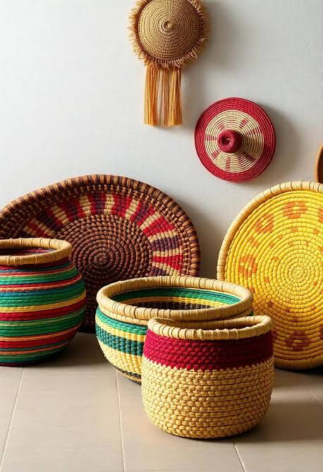
Ancient basketry began as simple woven containers and evolved into regional systems of knowledge about plants, form, and use.
Traditional Cultural Roots
As basketry grew from simple function to cultural practice, distinct regional traditions emerged. Each culture developed its own vocabulary of shapes, materials and decorative language. Basketry became a way to express identity through color, pattern, and the very structure of the weave. Traditional roots are visible in how different peoples use baskets for daily tasks, ceremonial exchange, and symbolic storytelling. The form and surface of a woven object often carries information about place, clan, and the craftspeople who made it.
Africa
In Africa, basketry is a deeply rooted craft that remains part of daily life and market culture. West African communities traditionally weave baskets from raffia, palm fronds, elephant grass, and local vines. Ghanaian and Nigerian basket makers create large market baskets, storage hampers, and fine spiral-woven trays. In East Africa, Maasai and Somali weavers use sisal and sweetgrass to make colorful, geometric baskets and lids. In southern Africa, baskets made from ilala palm and longgrass often serve as water carriers and ceremonial containers. African basketry is also known for coiling methods that produce tightly stitched, durable vessels. Many baskets carry symbolic patterns: diamond shapes for protection, concentric circles for fertility, and fish-scale motifs for abundance.
African basket makers often dye fibers using natural plant pigments. Indigo, madder, and certain tree bark tannins create deep blues, reds, and browns. The dyeing process is part of the craft, as fibers are soaked, dried, and bundled to preserve tone. Market baskets are sometimes finished with leather handles, woven lids, or decorative tassels. In many African societies, basketry is associated with women’s work and is taught from mother to daughter in domestic settings. Yet in some regions, men also weave large construction baskets used for carrying grain or building materials. Today, African basketry has become a significant export craft with fair-trade cooperatives supporting rural economies and preserving traditional knowledge.
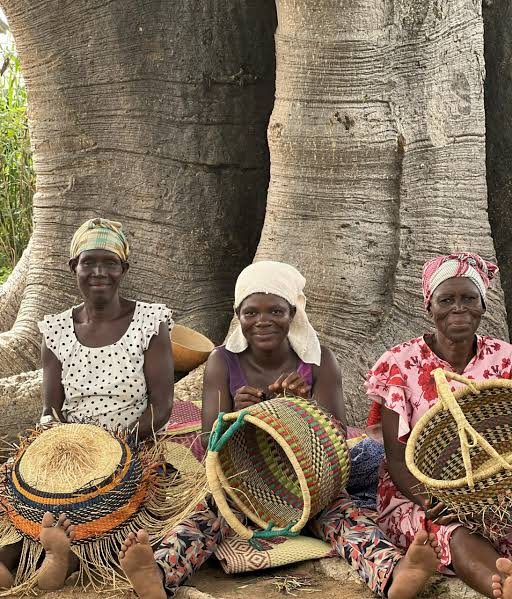
African basketry weaves together daily use, ceremonial meaning, and strong market traditions.
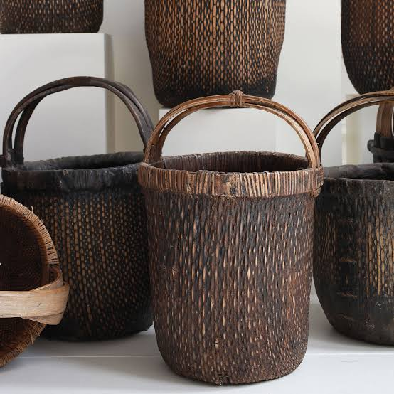
Asian basketry combines refined bamboo technique with deep connections to seasonal, religious, and domestic life.
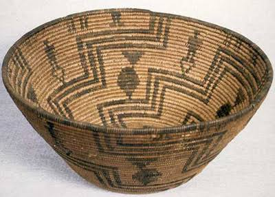
American basketry preserves indigenous knowledge and tells stories through pattern, form, and function.
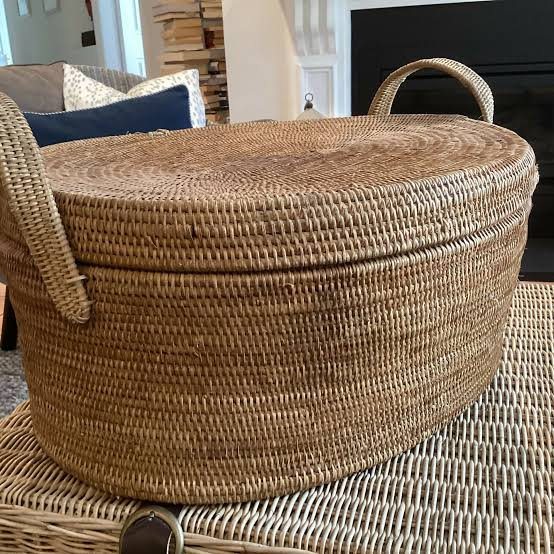
Oceania’s woven baskets are made from island fibers and carry the rhythms of coastal life and ritual exchange.
Technique Evaluation
Basketry techniques are the engines of form. Each method creates a different structure, texture, and use. Evaluating technique means understanding how coiling, twining, plaiting, and wicker are chosen for the task at hand. A good maker selects technique based on material, desired strength, and whether the basket must be waterproof, flexible, or decorative. Technique evaluation also shows how cultural values influence basket design: some traditions emphasize tightly coiled strength, while others favor open, airy surfaces.
Coiling
Coiling is one of the oldest basket techniques and is used worldwide. A core material, such as grass, reed, or root, is wrapped in a needle fiber and stitched into place. Each coil is attached to the previous one, allowing the basket to grow upward and outward. Coiled baskets are usually strong and can be made waterproof when the stitching is tight and the fiber is resin-treated. This technique allows the maker to vary the shape continuously, creating round bowls, tall storage jars, or flat trays. Many Native American and African basket traditions use coiling for valuable functional and ceremonial pieces.
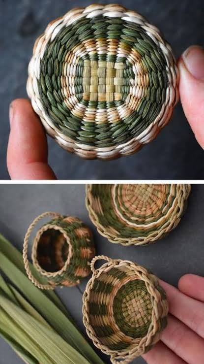
Coiling creates strong, closed surfaces ideal for storage baskets, cooking baskets, and ceremonial vessels.
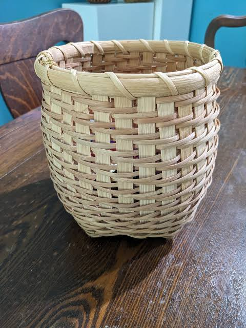
Twining gives baskets flexibility and strength, making it a favorite for load-bearing and decorative forms.
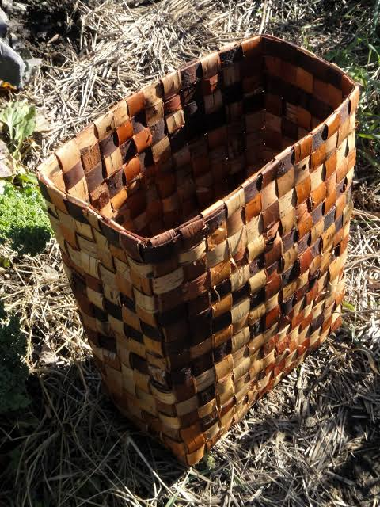
Plaiting creates geometric textures and is ideal for flat, wide surfaces such as mats and trays.
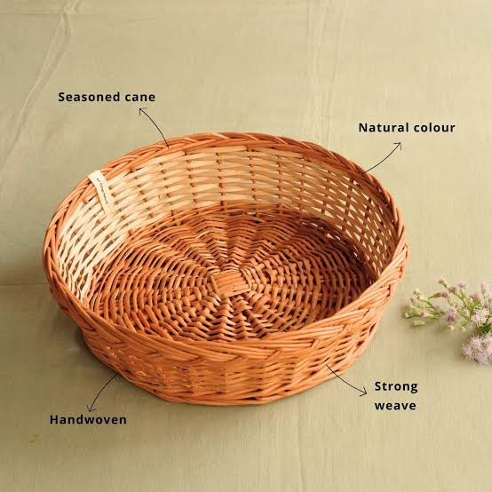
Wicker weaving uses a rigid frame for strong, stable baskets and furniture pieces.
Historical Function
The history of basketry is the history of its uses. Baskets were indispensable tools long before ceramic pots and woven cloth. They carried food, stored grain, supported cooking, transported children, and held sacred objects. Each historical function shaped the basket’s material, form and finish. Understanding these functions explains why certain techniques and shapes became standard in each region.
Gathering and Carrying
One of the earliest functions of baskets was for gathering and carrying wild foods. Weavers made lightweight, shallow baskets with open tops so berries, nuts, and roots could be collected quickly. Carrying baskets often had handles or straps designed for the shoulder or back. They needed to be strong enough to hold weight but flexible enough to move with the body. In many cultures, these gatherers’ baskets were shaped to fit the human torso or hip, making harvesting more efficient.
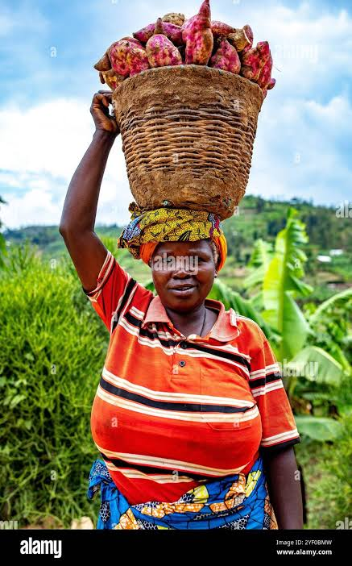
Gathering baskets were ergonomic tools shaped to support movement through fields and forests.
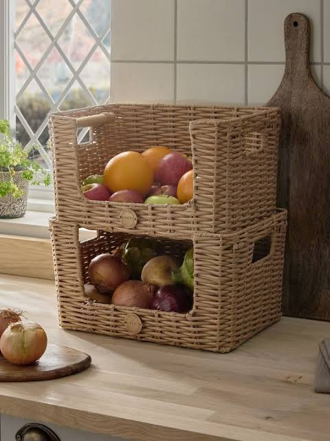
Storage baskets kept food and valuables safe long before metal containers were common.
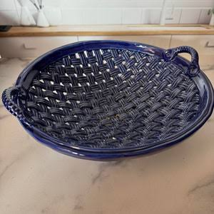
Heat-tolerant baskets played a role in steaming, drying, and preparing food across cultures.
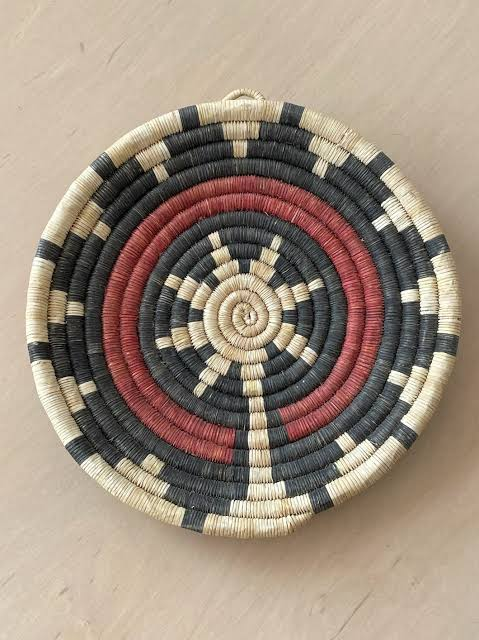
Ceremonial baskets carry symbolism, social meaning, and the maker’s skill across generations.
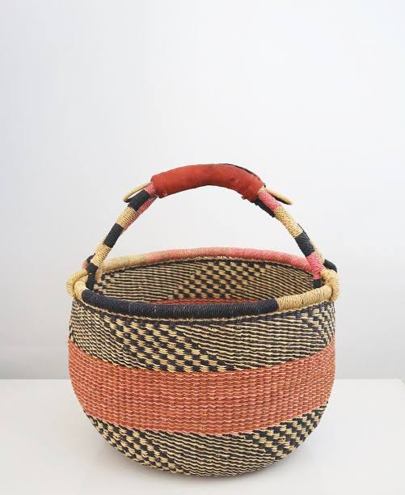
Baskets were not only tools but also traded goods that carried craft knowledge across regions.
Modern Revival
Today, basketry is enjoying a strong revival in craft, design, and education. Contemporary makers celebrate traditional forms while pushing the medium into new contexts. The modern revival includes fine art exhibitions, sustainable design labs, social enterprise craft cooperatives, and academic study. New basketry is not simply about copying the past; it is about understanding the craft system and adapting it to modern needs with design intelligence.
Education and Craft Schools
Many art schools now teach basketry as part of fiber arts, sculpture, and material studies. Students learn basic weaves, material preparation, and three-dimensional form-making. Workshops often begin with plant identification and fiber processing, connecting design work to ecological awareness. Students are encouraged to experiment with scale, surface, and material combinations. This educational revival means that basketry is recognized as a serious design discipline, not just a traditional handicraft.
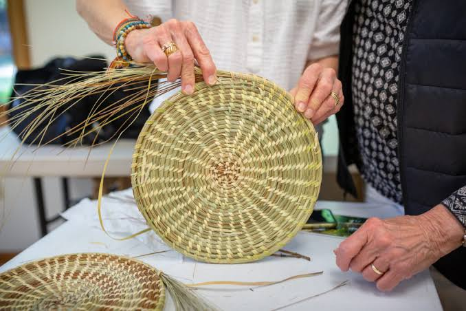
Schools teach basketry as a way to connect craft, design thinking, and sustainable materials.
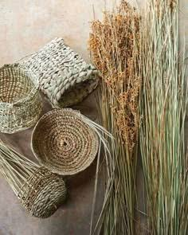
Modern basketry is celebrated for its low-impact materials and repairable, long-lasting design.
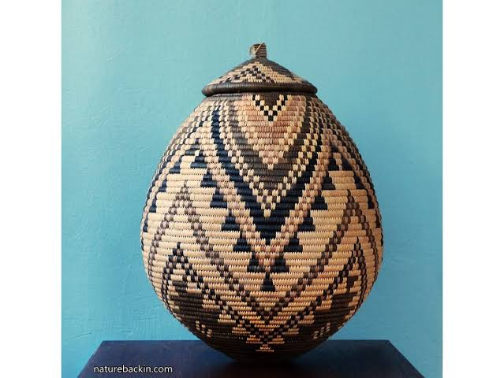
Contemporary basketry is shown in museums and galleries as both craft and conceptual art.
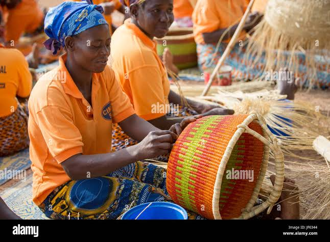
Craft cooperatives make basketry sustainable for communities and keep the craft alive.
Careers, Education and Future
Basketry offers career paths in fine craft, design, education, cultural preservation, and entrepreneurship. Graduates who study basketry can become studio artists, product designers, community educators, or cultural heritage specialists. Skilled basket makers also find work in interior design, crafting bespoke furniture, lighting, and home accessories. The practice builds transferrable skills in hand-eye coordination, material selection, problem solving, visual planning, and iterative making. Many vocational programs include basketry as part of fiber arts, crafts, or industrial design curricula. Teaching basketry strengthens local economies by supporting small-scale craft businesses and tourism. Workshops and residencies invite visitors to learn about local plant materials, dyeing methods, and woven traditions. Basketry is also part of sustainable business models that prioritize slow design and low-impact production. Future developments include digitally-enabled pattern design, educational resources for remote learners, and collaborations between basket makers and engineers. Conservation scientists are working with basketry traditions to preserve museum collections and revive endangered techniques. There is growing interest in using plant-based weavings as acoustic panels, packaging alternatives, and living structures. As consumers seek meaningful, handmade objects, basketry is positioned as a craft that offers authenticity, durability, and cultural story. For students, mastering basketry encourages respect for natural materials, patience in process, and pride in making objects that are both useful and beautiful.
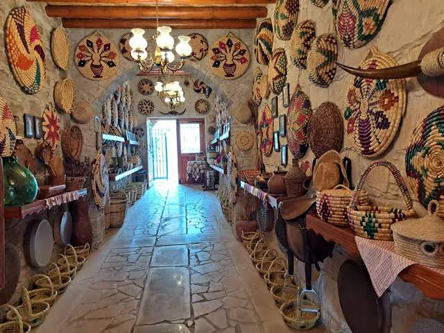
Basketry education opens doors to craft-based careers, cultural renewal, and sustainable design practice.